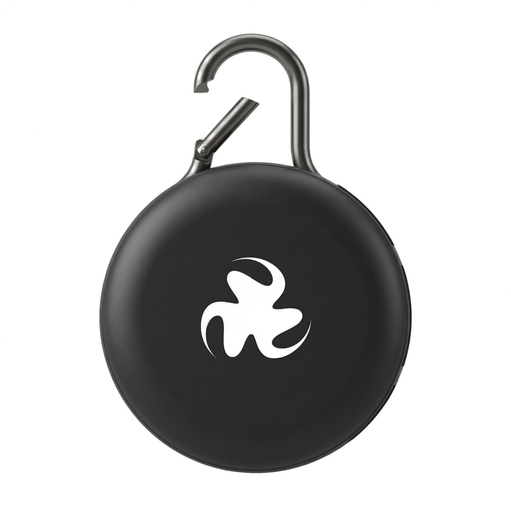

¿Qué es?
Un nodo portátil para registrar concentraciones ambientales de ozono (O₃). Se comunica mediante Bluetooth con un teléfono Android, que puede incorporar la ubicación y enviar los datos a la plataforma.

SENSOR AMBIENTAL PORTÁTIL
Conoce las mediciones de ozono de tu entorno y contribuye a crear un mapa ambiental colaborativo desde tu móvil.
Precio de demostración para el Sprint 1. No se ha validado el coste final de fabricación.
El sensor puede usarse sin suscripción. Para enviar mediciones al servidor necesita un móvil compatible.
INFORMACIÓN DEL PRODUCTO
Información clara sobre qué mide el dispositivo, qué necesitas para utilizarlo y qué aspectos del prototipo siguen pendientes de validación.
Un nodo portátil para registrar concentraciones ambientales de ozono (O₃). Se comunica mediante Bluetooth con un teléfono Android, que puede incorporar la ubicación y enviar los datos a la plataforma.
Un dispositivo montado con carcasa y alimentación recargable, acceso a la aplicación Android y consulta de mediciones propias sin suscripción obligatoria. El contenido definitivo del paquete se confirmará antes del lanzamiento.
El diseño de carcasa, la autonomía y la precisión requieren validación. Las mediciones son complementarias y no sustituyen sistemas oficiales de vigilancia ni constituyen un diagnóstico de exposición personal.
También planteamos soluciones para universidades, empresas y administraciones que quieren estudiar zonas concretas mediante campañas colaborativas.